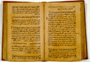

Abu cUbayd al-Qasim b. Sallam, Garib al-H
Abu cUbayd (gestorven in
837) behandelt in dit boek de ongebruikelijke woordenschat in de uitspraken van de profeet
Muh
Dit handschrift gold tot voor kort als het oudst gedateerde Midden-Oosterse handschrift op papier. Beit-Arié vermeldt echter een Arabisch handschrift dat in een bibliotheek in Alexandrië wordt bewaard en zou dateren uit 233/848. Al is het Leidse handschrift dan misschien niet meer het alleroudst gedateerde op papier, toch is het van een respectabele leeftijd. Ruim honderd jaar na de introductie van het procédé van papier maken (een Chinese uitvinding) in het Midden-Oosten is het afgeschreven. Het papier is dik, bijna als dun karton. Het is lichtbruin en het oppervlak is glad gemaakt. In het papier is geen spoor van de structuur van een papierschep of -zeef te zien. Het schrift is duidelijk van een fase van voor het ‘naski’, en heeft kenmerken die we terugzien in het latere Magribijnse schrift.
Literatuur
- C. Brockelmann, Geschichte der arabischen Litteratur. Leiden 1937-1949. G I, p. 107.
- M.J. de Goeje, ‘Beschreibung einer alten Handschrift von Abu cObaid’s
Garib-al-H
adit’, in: Zeitschrift der Deutschen morgenländischen Gesellschaft, 18 (1864), p. 781-807. - P. Voorhoeve, Handlist of Arabic manuscripts in the Library of the University of Leiden and other collections in The Netherlands. 2nd, enl. ed. The Hague [etc.] 1980 ( = Bibliotheca Universitatis Leidensis. Codices manuscripti. VII), p. 95.
- Malachi Beit-Arié, Hebrew codicology. Tentative typology of technical practices employed in Hebrew dated medieval manuscripts. Jerusalem 1981, p. 20, 26-37, 111.
| vorige pagina | top pagina |